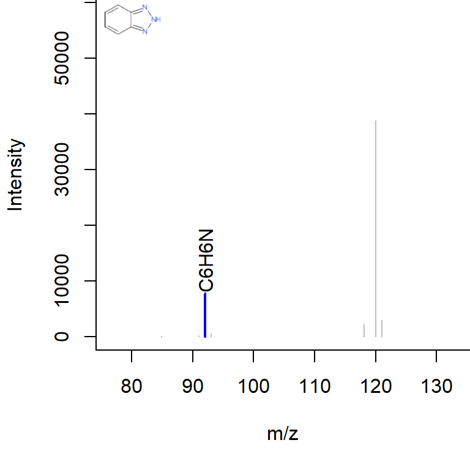
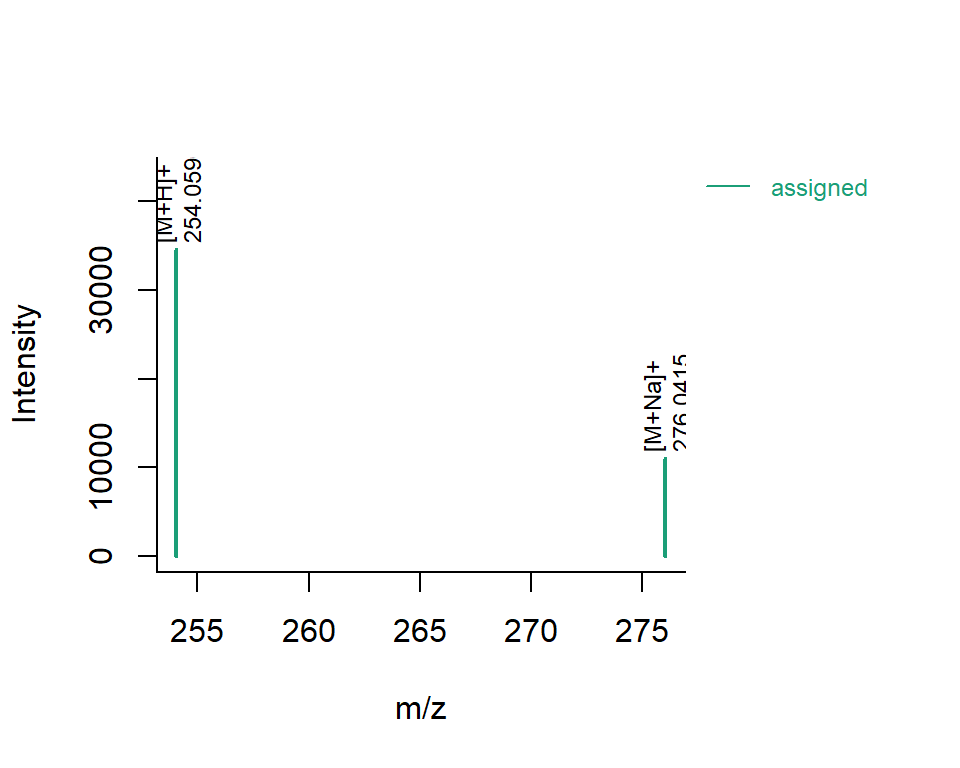
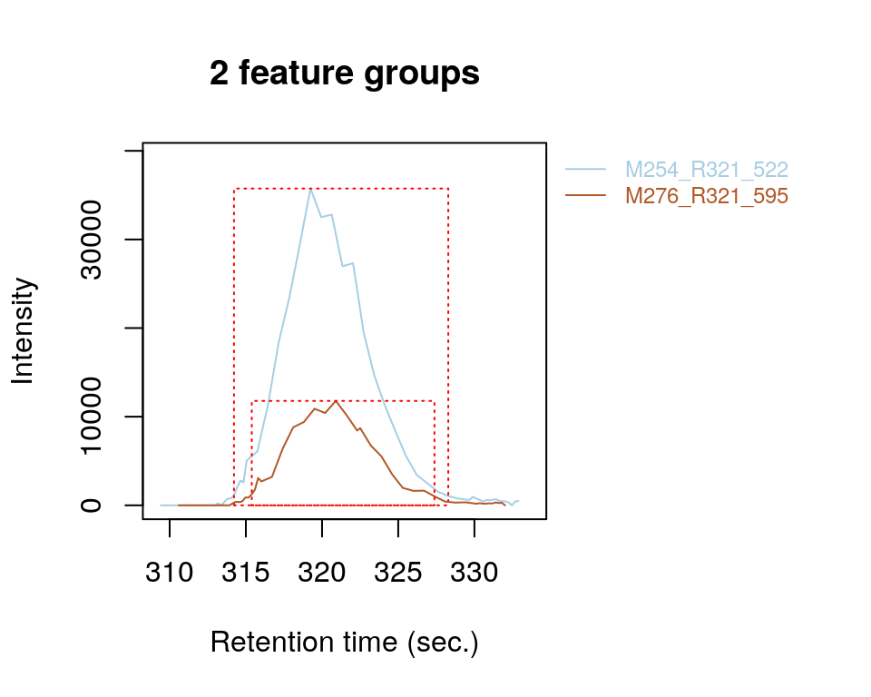
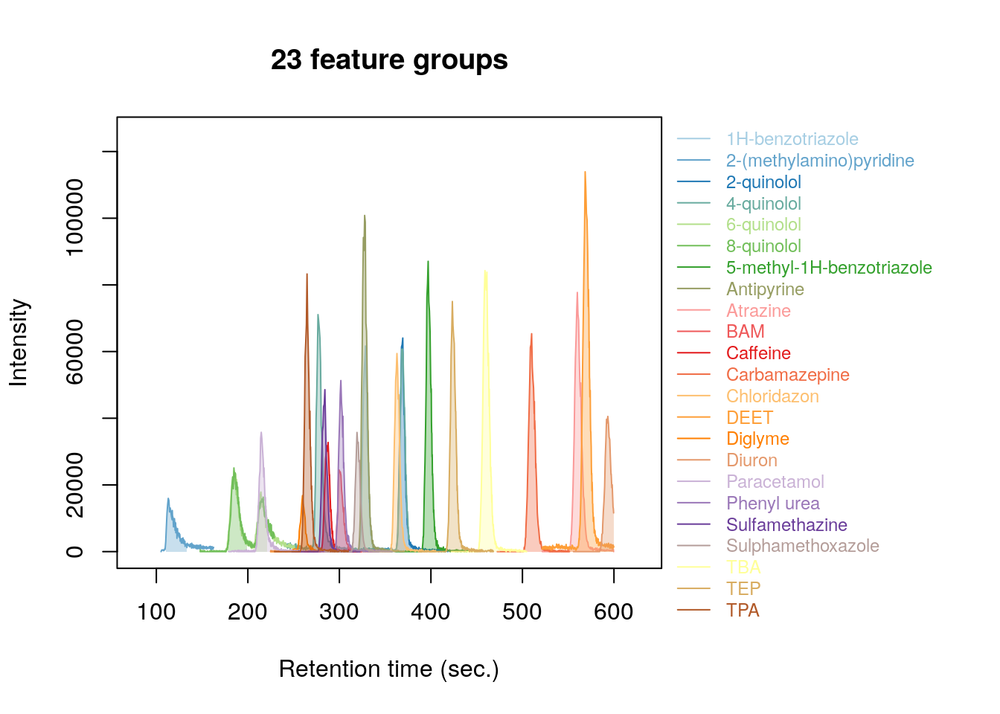

patRoon tutorial
Rick Helmus
2018-03-15
Data preparation
In this tutorial we will use example data provided within the [patRoonData] package. Please make sure this package is installed (see the [readme] for brief installation instructions). The example dataset contains LC-MS data for a standard mixture with known composition (‘standard-X’) and a blank solvent (‘solvent-X’), both in triplicate. While this may not seem like the most exciting data, it does allow to demonstrate the most important functionalities of patRoon.
The provided analyses already have been exported to an open format (.mzML) and are ready to use. For your own data it may be necessary to first perform mass recalibration and data export using external tools such as [proteowizard] or vendor software (patRoon supplies several utilities for Bruker data, see the bruker-utils reference documentation) to mzML or mzXML files.
New project
To start a new non-target analysis it is highly recommended to create a new directory. We will refer to this directory as the project directory. This directory typically contains:
- an
Rscript (or scripts) which will do the non-target data processing - an (optional) .csv file with analysis information
- an automatically generated cache file which is internally used by
patRoonto cache (intermediate) results, therefore, preventing repeated execution of lengthy workflow steps that have been performed before.
Once you have created a suitable directory in the location of your choosing, please create the following skeleton R script:
library(patRoon)
workPath <- "~/my_project" # change this to the location of your project directory
## setwd(workPath)
dataDir <- patRoonData::exampleDataPath() # path to example data filesThe next step is to generate information ncessary for the analysis. To do so, we need to specify the names and file locations of the analyses, to which replicate group they belong and which replicate group(s) should be used for blank subtraction. To do so, we can use the generateAnalysisInfo() utility function which automatically generates a suitable data.frame for us from given analyses:
generateAnalysisInfo(dataDir)
#> path analysis group ref
#> 1 C:/Program Files/R/R-3.4.3/library/patRoonData/extdata solvent-1 solvent-1
#> 2 C:/Program Files/R/R-3.4.3/library/patRoonData/extdata solvent-2 solvent-2
#> 3 C:/Program Files/R/R-3.4.3/library/patRoonData/extdata solvent-3 solvent-3
#> 4 C:/Program Files/R/R-3.4.3/library/patRoonData/extdata standard-1 standard-1
#> 5 C:/Program Files/R/R-3.4.3/library/patRoonData/extdata standard-2 standard-2
#> 6 C:/Program Files/R/R-3.4.3/library/patRoonData/extdata standard-3 standard-3As you can see the generated data.frame consists of four columns:
- path: the path of the file directory containing the analysis
- analysis: the name of the analysis. The shoud be the file name without file extension.
- group: to which replicate group the analysis belongs. All analysis which are replicates of each other get the same name.
- ref: which replicate group should be used for blank subtraction.
The latter two columns are especially important for data cleanup.
In our example, the solvents and standards should belong each to a different replicate group ("solvent" and "standard"). The solvents should be used for blank subtraction. For this we can use the groups and refs arguments of generateAnalysisInfo():
anaInfo <- generateAnalysisInfo(dataDir,
groups = c(rep("solvent", 3), rep("standard", 3)),
refs = "solvent")
anaInfo
#> path analysis group ref
#> 1 C:/Program Files/R/R-3.4.3/library/patRoonData/extdata solvent-1 solvent solvent
#> 2 C:/Program Files/R/R-3.4.3/library/patRoonData/extdata solvent-2 solvent solvent
#> 3 C:/Program Files/R/R-3.4.3/library/patRoonData/extdata solvent-3 solvent solvent
#> 4 C:/Program Files/R/R-3.4.3/library/patRoonData/extdata standard-1 standard solvent
#> 5 C:/Program Files/R/R-3.4.3/library/patRoonData/extdata standard-2 standard solvent
#> 6 C:/Program Files/R/R-3.4.3/library/patRoonData/extdata standard-3 standard solventNote that we set the reference for the solvents to themself. This will remove any features from the solvents, which is generally fine as we are usually not interested in the blanks anyway.
Depending on your preference, it may be preferred to export the data.frame to a .csv file for larger project so it can be easily edited, for instance, with graphical tools such as Excel. Alternatively, the newProject() function can be used to make this process even easier (briefly discussed here).
Extract and group features
The first step of a LC-MS non-target analysis workflow is typically the extraction of so called ‘features’. While sometimes slightly different definitions are used, a feature can be seen as a single peak within an extracted ion chromatogram. For a complex sample it is not uncommon that hundreds to thousands of features can extracted. Because these large numbers this process is typically automatized nowadays.
To obtain all the features within your dataset the findFeatures function is used. This function requires that the analysis information (anaInfo variable created earlier) and the desired algorithm that should be used. On top of that there are many more options that can significantly influence the feature finding process, hence, it is important to evaulate results afterwards.
In this tutorial we will use the [OpenMS] software to find features:
fList <- findFeatures(anaInfo, "openms", mzppm = 5)fList
#> A features object ('featuresOpenMS')
#> Total feature count: 2662
#> Average feature count/analysis: 444
#> Analyses: solvent-1, solvent-2, solvent-3, standard-1, standard-2, standard-3 (6 total)
#> Replicate groups: solvent, standard (2 total)
#> Replicate groups used as ref: solvent (1 total)
#> Object size (indication): 401.6 kBAfter some processing time (especially for larger datasets), the next step is to group features. During this step, features from different analysis are grouped by alignment of their retention times and m/z data. This alignment is necessary because it is common that instrumental error will result in (slight) variations for these data between analyses.
To group features the groupFeatures() function is used, which has similar argument requirements as findFeatures and many more options to tune the process.
fGroups <- groupFeatures(fList, "openms")
fGroups
#> A feature groups object ('featureGroupsOpenMS')
#> Feature groups: M79_R20_1, M79_R20_2, M79_R112_3, M79_R8_4, M85_R113_5, M85_R14_6, ... (639 total)
#> Analyses: solvent-1, solvent-2, solvent-3, standard-1, standard-2, standard-3 (6 total)
#> Replicate groups: solvent, standard (2 total)
#> Replicate groups used as ref: solvent (1 total)
#> Object size (indication): 744.5 kBThe groupTable() function can be used to have a look at generated feature groups and their intensities (i.e. peak heights) across all analyses:
head(groupTable(fGroups))
#> group ret mz solvent-1 solvent-2 solvent-3 standard-1 standard-2 standard-3
#> 1: M79_R20_1 19.637963 78.99679 7828 7092 7320 5368 7456 6812
#> 2: M79_R20_2 19.804059 79.02095 0 0 0 10540 7040 2036
#> 3: M79_R112_3 112.041979 79.02098 0 0 0 24352 7008 4240
#> 4: M79_R8_4 8.143214 79.02099 0 0 0 93420 88860 0
#> 5: M85_R113_5 112.631040 84.95948 8872 8780 10816 9596 8728 8732
#> 6: M85_R14_6 14.141316 84.95951 223372 207404 201416 252608 251744 235596Data cleanup
The next step is to perform some basic rule based filtering with the filter() function. As its name suggests this function has several way to filter data. It is a so called generic function and methods exists for various data types, such as the feature groups object (fGroups) that was made in the previous section.
In this tutorial we will filter grouped features (or ‘feature groups’) based on a minimal intensity, minimal abundance within replicates and absence within blanks. Finally, we will also remove any feature groups eluting before roughly the dead volume of the system:
fGroups <- filter(fGroups, intensityThreshold = 10000, intraRGroupAbundance = 1,
minBlankThreshold = 5, repetitions = 2, retentionRange = c(110, -1))
#> Applying intensity filter... Done! Filtered 406 (63.54%) groups. Remaining: 233.
#> Applying retention filter... Done! Filtered 185 (79.40%) groups. Remaining: 48.
#> filter repetition 1/2
#> Applying replicate filter... Done! Filtered 17 (35.42%) groups. Remaining: 31.
#> Applying blank filter... Done! Filtered 2 (6.45%) groups. Remaining: 29.
#> filter repetition 2/2
#> Applying replicate filter... Done! Filtered 0 (0.00%) groups. Remaining: 29.
#> Applying blank filter... Done! Filtered 0 (0.00%) groups. Remaining: 29.As can been from above command this will remove quite a large part our data. However, in our experience using the right settings is a very effective way to separate interesting data from the rest. Some hints on this process:
- The intensity filter is an effective way to remove not oly ‘noisy’ data, but can also be used to remove any low intensity peaks which are very likely to miss any MS/MS data (assuming you are interested in this and data has been recorded with it).
- The
intraRGroupAbundanceargument specifies a fraction to which a feature group should be minimally present within all replicates. This is a very effective filter in removing any outliers or features which don’t actually represent a well defined chromatographic peak, but perhaps are just part of another peak or simply noise. - The
minBlankThresholdargument is used for blank subtraction. In the above example, any features with an intensity less than five times compared to the average intensity in blanks will be removed. - The
repetitionsargument is used to repeat some of the filter steps to make sure that all the data is really filtered out. A value of two is usually sufficient.
Finally, we can have a quick look at our data by plotting some nice extracted ion chromatograms (EICs) for all remaining feature groups:
plotEIC(fGroups, colourBy = "fGroups", showFGroupRect = FALSE, showPeakArea = TRUE,
topMost = 1, showLegend = FALSE)
The next logical step in a non-target workflow is most likely to perform further prioritization of data. However, in this tutorial we are just dealing with a relative simple standard mixture, se we will move to the identification part.
MS peak lists
Having obtained a good dataset with features of interest, we can start moving to figuring out what these may be. Before performing any identification steps, however, the first step is to extract all relevant MS data. This data was obtained with data-dependent MS/MS mode, so in the ideal case we obtain al MS and MS/MS spectra for each feature group.
The generateMSPeakLists() will perform this action for us and will generate so called MS peaklists in the process. These peaklists are basicially the relevant MS and MS/MS spectra in tabular form. The command below will use the mzR algorithm to do so:
plists <- generateMSPeakLists(fGroups, "mzr", avgMzWindow = 0.0005,
avgMinIntensity = 500, precursorMzWindow = 8)plists
#> A MSPeakLists object ('MSPeakLists')
#> Total peak count: 19715 (MS: 17142 - MS/MS: 2573)
#> Average peak count/analysis: 6572 (MS: 5714 - MS/MS: 858)
#> Total peak lists: 171 (MS: 87 - MS/MS: 84)
#> Average peak lists/analysis: 57 (MS: 29 - MS/MS: 28)
#> Object size (indication): 565.8 kBFormula calculation
Using the data from the MS peaklists generated during the previous step we can generate a list of formula candidates for each feature group based on measured m/z values, isotopic patterns and presence of MS/MS fragments. In this tutorial we will use this data as an extra hint to score canddiate chemical structures generated during the next step. The command below will use [GenForm] to perform this step:
forms <- generateFormulas(fGroups, "genform", plists, maxMzDev = 5,
adduct = "M+H", elements = "CHNOPSCl")Note that we limited to only to the the elements C, H, N, O, O, S and Cl. It is highly recommended to limit the elements (by default it is just C, H, N, O and P) as this can signfificantly reduce porcessing time and improper numbers. In this tutorial we already knew which compounds to expect so the choice was easy, but often a good guess can be made in advance.
The generateFormulas() function returns a list of formulas of every feature in all analyses. The consensus() function is used subsequently to generate a final table of formula candidates for each feature group. During this process, any formulas for a particular feature group which were detected in only a fraction of the analyses (by default <75%, controlled by the formAnaThreshold argument) are considered as outliers and removed. In addition, this function will also set a limit to only keep a number of top candidates (ten by default, controlled by the maxFormulas and maxFragFormulas arguments). In this tutorial we will just stick with defaults:
formulas <- consensus(forms, fGroups = fGroups)
#> Generating consensus for formula lists (GenForm)... Done!
formulas
#> A formulaConsensus object (formulaConsensus)
#> Algorithm: GenForm
#> Total formula count: 246 (all), 41 (MS) and 205 (MS/MS)
#> Average formulas per feature group: 18.3 (all), 11.6 (MS), 19.6 (MS/MS)
#> Object size (indication): 75.8 kBCompound identification
Now it is time to actually see what compounds we may be dealing with. In this tutorial we will use [MetFrag] to come up with a list of possible candidates structures for each feature group. Before we can start you have to download the [MetFrag CLI jar file][MetFragCLI] and specify its file location:
options(patRoon.path.metFragCL = "~/MetFrag2.4.3-CL.jar") # change to the full path of the MetFrag CLI jar fileThen generateCompounds() is used to execute MetFrag and generate the compounds.
compounds <- generateCompounds(fGroups, plists, "metfrag", topMost = 25,
adduct = 1, isPositive = TRUE,
database = "ExtendedPubChem", maxCandidatesToStop = 5000,
scoreTypes = c("FragmenterScore", "OfflineMetFusionScore",
"PubChemNumberPatents",
"PubChemNumberPubMedReferences"))compounds
#> A compounds object (compounds)
#> Algorithm: MetFrag
#> Number of feature groups with compounds in this object: 23
#> Number of compounds: 559 (total), 24.3 (mean), 9 - 25 (min - max)
#> Object size (indication): 1.7 MB
plotSpec(compounds, 1, "M120_R328_91", plists)
While generateCompounds() is running a list of candidate compound structures will be downloaded for every feature group (in this case from PubChem) and ranked according to various scoring parameters.
As with previous described workfow functions, there are many different arguments that can specified to modify the behaviour when generating compounds. In brief, here we limit the number to the top 25 candidates (this will save a lot of processing time), specify that we are primarily interested in protonated ions and use the extended PubChem database so that we can score on number of patents and PubMed references along with scoring for similarity to in-silico generated MS/MS spectra (FragmenterScore) and MassBank derived mass spectra (OfflineMetFusionScore).
As a side note: this is often one of the most time consuming steps during the workflow. For this reason, and in order to not ‘abuse’ the server used by MetFrag, you should always take care to prioritie your data before running this function.
In the previous step we generated candidate formulas for all feature groups. These can be used to add yet another scoring parameter so we can assess if the formula part of a candidate structure makes sense:
compounds <- addFormulaScoring(compounds, formulas, updateScore = TRUE)Components
So far we mainly dealt with feature groups as if they are separate chemical compounds. However, formation of multiple ionization adducts (e.g. sodium and potassium) and the presence of isotopologues yield multiple m/z values for the same compound. As a result, multiple feature groups will be present describing the same chemical compound, each describing the same retention pattern. To reduce this complexity it is useful to generate so called components which are basically groups of feature groups which are likely to be the same compound. Another advantage is this grouping process is that extra chemical information of a compound is revealed which may help compound identification.
Generating components is performed with the generateComponents() function:
components <- generateComponents(fGroups, "camera", ionization = "positive")components
#> A components object (componentsCamera)
#> Algorithm: CAMERA
#> Components: CMP1, CMP2, CMP3, CMP4, CMP5, CMP6, ... (20 total)
#> Number of feature groups in components: 29 (total), 1.4 (mean), 1 - 3 (min - max)
#> Object size (indication): 512.9 kB
plotSpec(components, "CMP17")
plotEIC(components, "CMP17", fGroups)
Reporting
The last step of the workflow is typically reporting data: during this step all the collected data is transformed to graphical plots (reportPDF() and reportMD()) or tabular csv data (reportCSV()).
reportCSV(fGroups, formConsensus = formulas, compounds = compounds, components = components)
reportPDF(fGroups, formConsensus = formulas, compounds = compounds, components = components,
MSPeakLists = plists)
reportMD(fGroups, formConsensus = formulas, compounds = compounds, components = components,
MSPeakLists = plists)The output of reportMD() can be viewed here.
Note that these functions can be called at any time during the workflow. This may be especially useful if you want evaluate results during optimization or exploring the various algorithms available.
Other topics
Create new projects with newProject()
In this tutorial we started with creating a project directory with a template script and using the generateAnalysisInfo() to (semi-)automatically generate analysis information required for subsequent workflow steps. If you are using (a recent version of) R Studio a quicker and potentially user friendlier alternative is to use the newProject() function. This function will present you with a ‘wizard’ like graphical screen guiding you to choose a project directory, select all analyses and select all common workflow steps that should be executed. When finished the input will then be used to generate a template processing script.
Suspect screening
scr <- screenTargets(fGroups, patRoonData::targets)
#> Found 23/23 targets (100.00%)
head(scr)
#> name rt mz group exp_rt exp_mz d_rt d_mz solvent-1 solvent-2 solvent-3 standard-1 standard-2 standard-3
#> 1: 1H-benzotriazole 328 120.0556 M120_R328_91 327.9651 120.0555 -0.03486930 -1.330000e-04 0 0 0 56936 61668 60600
#> 2: 2-methylamino-pyridine 113 109.0760 M109_R116_61 115.7685 109.0759 2.76848297 -8.100000e-05 0 0 0 15980 15508 13796
#> 3: 2-quinolol 369 146.0600 M146_R369_178 368.8301 146.0600 -0.16986902 -6.466667e-05 0 0 0 64060 60760 63436
#> 4: 4-quinolol 277 146.0600 M146_R277_177 277.1632 146.0600 0.16320371 -7.233333e-05 0 0 0 66880 71080 68756
#> 5: 6-quinolol 214 146.0600 M146_R214_176 214.4695 146.0600 0.46945354 -8.000000e-05 0 0 0 16940 16340 17864
#> 6: 8-quinolol 185 146.0600 M146_R185_175 184.9442 146.0599 -0.05576015 -1.716667e-04 0 0 0 24516 25100 24172fGroupsScreening <- groupFeaturesScreening(fGroups, scr)
#> Converting screening results to feature groups... Done!
head(groupTable(fGroupsScreening))
#> group ret mz solvent-1 solvent-2 solvent-3 standard-1 standard-2 standard-3
#> 1: 1H-benzotriazole 327.9651 120.0555 0 0 0 56936 61668 60600
#> 2: 2-methylamino-pyridine 115.7685 109.0759 0 0 0 15980 15508 13796
#> 3: 2-quinolol 368.8301 146.0600 0 0 0 64060 60760 63436
#> 4: 4-quinolol 277.1632 146.0600 0 0 0 66880 71080 68756
#> 5: 6-quinolol 214.4695 146.0600 0 0 0 16940 16340 17864
#> 6: 8-quinolol 184.9442 146.0599 0 0 0 24516 25100 24172plotEIC(fGroupsScreening, colourBy = "fGroups", showFGroupRect = FALSE, showPeakArea = TRUE,
topMost = 1, showLegend = TRUE)
# perform 'regular' workflow steps as shown before (MS peak lists, formulas, compounds, ...)